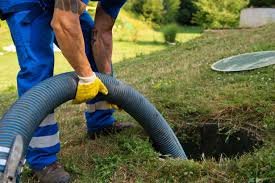

Был случай. Мы с соседом, Лукком Александром Юганесовичем, обсуждали вопрос правильной организации выгребной ямы. Дело в том, что особенность нашего грунта - высокая водопроницаемость. Отсюда вопрос, следует ли объем ямы делать замкнутым, или оставить без днища?
В качестве примера, Саша поделился собственным опытом. У меня, говорит, контур замкнутый, приходится систематически вызывать ассенизатора для откачки.
А я видел его бункер. Это мощный металлический куб, примерно, 8 кубометров.
Однажды, продолжает Саша, приезжает машина из Волосово. Специалистов двое - возрастной и молодой.
Возрастной все делает сам: - и за рулем, и шланг настраивает, и насос включает, опускает, и все остальное.
Машина работает. Сидим с ним, курим, в яму смотрим, как чавкает. Молодой ничего не делает, в сторонке стоит.
Спрашиваю:
- А, почему ты все сам? Почему молодого человека не привлекаешь?
Специалист брови ссуропил, вздыхает.
- Рано ему...
- Как рано? Такой лось здоровенный!
Специалист опять вздыхает. И с горечью:
- ...Горяч...